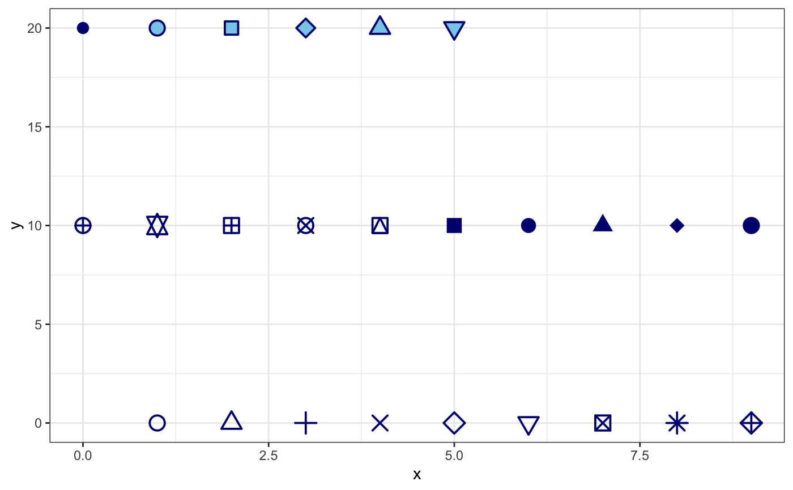
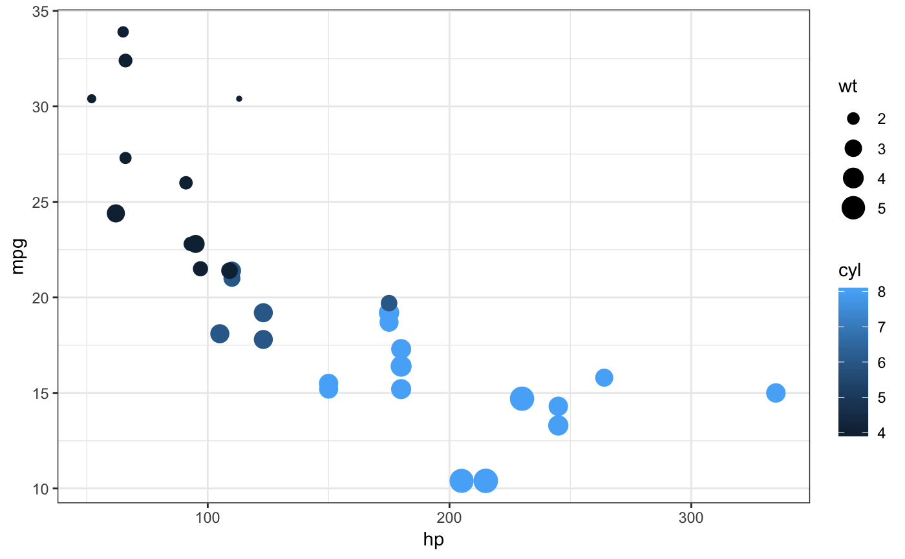
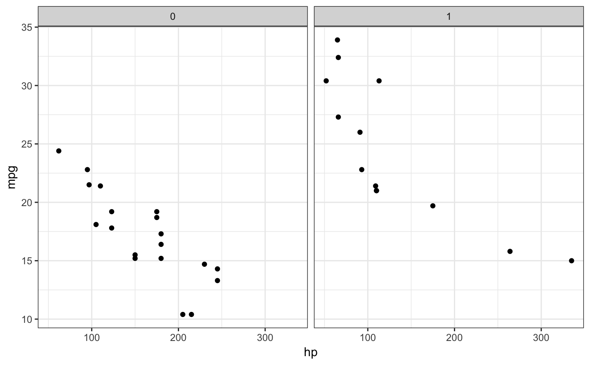
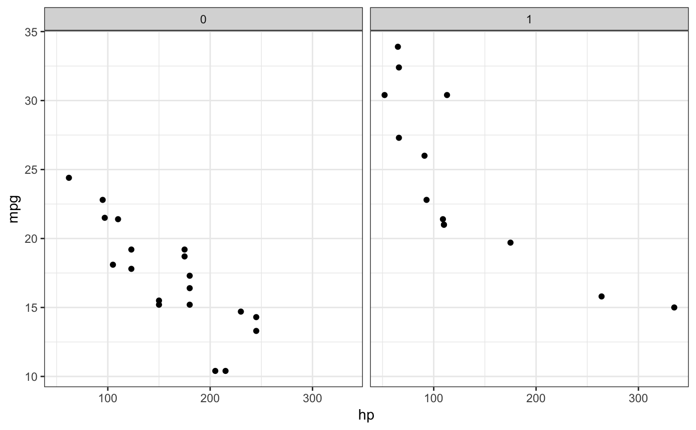
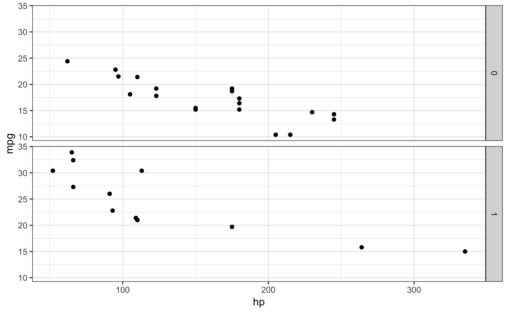
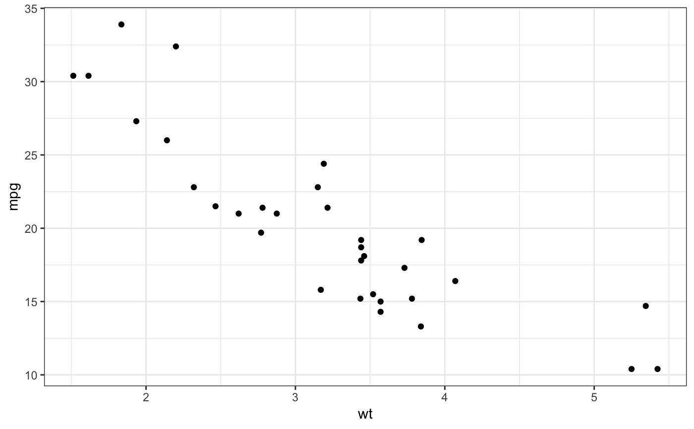
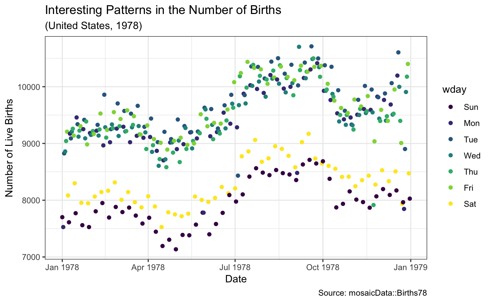

Scatterplots in ggformula.
gf_point(object = NULL, gformula = NULL, data = NULL, alpha, color, size, shape, fill, group, stroke, xlab, ylab, title, subtitle, caption, geom = "point", stat = "identity", position = "identity", show.legend = NA, show.help = NULL, inherit = TRUE, environment = parent.frame(), ...)
Arguments
| object | When chaining, this holds an object produced in the earlier portions of the chain. Most users can safely ignore this argument. See details and examples. |
|---|---|
| gformula | A formula with shape |
| data | A data frame with the variables to be plotted. |
| alpha | Opacity (0 = invisible, 1 = opaque). |
| color | A color or a formula used for mapping color. |
| size | A numeric size or a formula used for mapping size. |
| shape | An integer or letter shape or a formula used for mapping shape. |
| fill | A color for filling, or a formula used for mapping fill. |
| group | Used for grouping. |
| stroke | A numeric size of the border or a formula used to map stroke. |
| xlab | Label for x-axis. See also |
| ylab | Label for y-axis. See also |
| title, subtitle, caption | Title, sub-title, and caption for the plot.
See also |
| geom | A character string naming the geom used to make the layer. |
| stat | A character string naming the stat used to make the layer. |
| position | Either a character string naming the position function used for the layer or a position object returned from a call to a position function. |
| show.legend | A logical indicating whether this layer should be included in
the legends. |
| show.help | If |
| inherit | A logical indicating whether default attributes are inherited. |
| environment | An environment in which to look for variables not found in |
| ... | Additional arguments. Typically these are
(a) ggplot2 aesthetics to be set with |
Value
a gg object
Specifying plot attributes
Positional attributes (a.k.a, aesthetics) are specified using the formula in gformula.
Setting and mapping of additional attributes can be done through the
use of additional arguments.
Attributes can be set can be set using arguments of the form attribute = value or
mapped using arguments of the form attribute = ~ expression.
In formulas of the form A | B, B will be used to form facets using
facet_wrap() or facet_grid().
This provides an alternative to
gf_facet_wrap() and
gf_facet_grid() that is terser and may feel more familiar to users
of lattice.
Evaluation
Evaluation of the ggplot2 code occurs in the environment of gformula.
This will typically do the right thing when formulas are created on the fly, but might not
be the right thing if formulas created in one environment are used to create plots
in another.
See also
Examples
gf_point()#> #> #> #> #> #>gf_point( (10 * ((1:25) %/% 10)) ~ ((1:25) %% 10), shape = 1:25, fill = "skyblue", color = "navy", size = 4, stroke = 1, data = NA)gf_point(mpg ~ hp, color = ~ cyl, size = ~ wt, data = mtcars)gf_point(mpg ~ hp | am, group = ~ cyl, data = mtcars)gf_point(mpg ~ hp | ~ am, group = ~ cyl, data = mtcars)gf_point(mpg ~ hp | am ~ ., group = ~ cyl, data = mtcars)# Chaining in the data mtcars %>% gf_point(mpg ~ wt)# short cuts for main labels in the plot if (require(mosaicData)) { gf_point(births ~ date, color = ~ wday, data = Births78, xlab = "Date", ylab = "Number of Live Births", title = "Interesting Patterns in the Number of Births", subtitle = "(United States, 1978)", caption = "Source: mosaicData::Births78") }